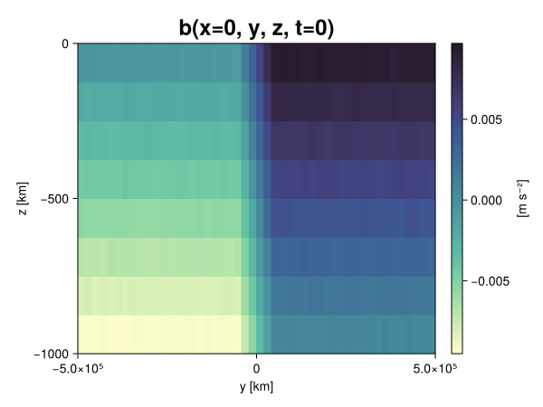
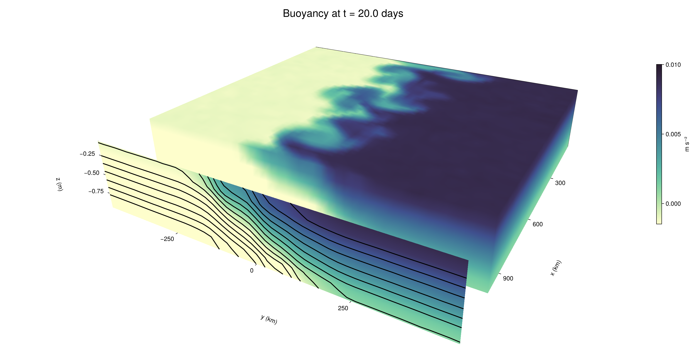

Baroclinic adjustment
In this example, we simulate the evolution and equilibration of a baroclinically unstable front.
Install dependencies
First let's make sure we have all required packages installed.
using Pkg
pkg"add Oceananigans, CairoMakie"using Oceananigans
using Oceananigans.UnitsGrid
We use a three-dimensional channel that is periodic in the x direction:
Lx = 1000kilometers # east-west extent [m]
Ly = 1000kilometers # north-south extent [m]
Lz = 1kilometers # depth [m]
grid = RectilinearGrid(size = (48, 48, 8),
x = (0, Lx),
y = (-Ly/2, Ly/2),
z = (-Lz, 0),
topology = (Periodic, Bounded, Bounded))48×48×8 RectilinearGrid{Float64, Periodic, Bounded, Bounded} on CPU with 3×3×3 halo
├── Periodic x ∈ [0.0, 1.0e6) regularly spaced with Δx=20833.3
├── Bounded y ∈ [-500000.0, 500000.0] regularly spaced with Δy=20833.3
└── Bounded z ∈ [-1000.0, 0.0] regularly spaced with Δz=125.0Model
We built a HydrostaticFreeSurfaceModel with an ImplicitFreeSurface solver. Regarding Coriolis, we use a beta-plane centered at 45° South.
model = HydrostaticFreeSurfaceModel(; grid,
coriolis = BetaPlane(latitude = -45),
buoyancy = BuoyancyTracer(),
tracers = :b,
momentum_advection = WENO(),
tracer_advection = WENO())HydrostaticFreeSurfaceModel{CPU, RectilinearGrid}(time = 0 seconds, iteration = 0)
├── grid: 48×48×8 RectilinearGrid{Float64, Periodic, Bounded, Bounded} on CPU with 3×3×3 halo
├── timestepper: QuasiAdamsBashforth2TimeStepper
├── tracers: b
├── closure: Nothing
├── buoyancy: BuoyancyTracer with ĝ = NegativeZDirection()
├── free surface: ImplicitFreeSurface with gravitational acceleration 9.80665 m s⁻²
│ └── solver: FFTImplicitFreeSurfaceSolver
├── advection scheme:
│ ├── momentum: WENO reconstruction order 5
│ └── b: WENO reconstruction order 5
└── coriolis: BetaPlane{Float64}We start our simulation from rest with a baroclinically unstable buoyancy distribution. We use ramp(y, Δy), defined below, to specify a front with width Δy and horizontal buoyancy gradient M². We impose the front on top of a vertical buoyancy gradient N² and a bit of noise.
"""
ramp(y, Δy)
Linear ramp from 0 to 1 between -Δy/2 and +Δy/2.
For example:
```
y < -Δy/2 => ramp = 0
-Δy/2 < y < -Δy/2 => ramp = y / Δy
y > Δy/2 => ramp = 1
```
"""
ramp(y, Δy) = min(max(0, y/Δy + 1/2), 1)
N² = 1e-5 # [s⁻²] buoyancy frequency / stratification
M² = 1e-7 # [s⁻²] horizontal buoyancy gradient
Δy = 100kilometers # width of the region of the front
Δb = Δy * M² # buoyancy jump associated with the front
ϵb = 1e-2 * Δb # noise amplitude
bᵢ(x, y, z) = N² * z + Δb * ramp(y, Δy) + ϵb * randn()
set!(model, b=bᵢ)Let's visualize the initial buoyancy distribution.
using CairoMakie
# Build coordinates with units of kilometers
x, y, z = 1e-3 .* nodes(grid, (Center(), Center(), Center()))
b = model.tracers.b
fig, ax, hm = heatmap(view(b, 1, :, :),
colormap = :deep,
axis = (xlabel = "y [km]",
ylabel = "z [km]",
title = "b(x=0, y, z, t=0)",
titlesize = 24))
Colorbar(fig[1, 2], hm, label = "[m s⁻²]")
fig
Simulation
Now let's build a Simulation.
simulation = Simulation(model, Δt=20minutes, stop_time=20days)Simulation of HydrostaticFreeSurfaceModel{CPU, RectilinearGrid}(time = 0 seconds, iteration = 0)
├── Next time step: 20 minutes
├── Elapsed wall time: 0 seconds
├── Wall time per iteration: NaN days
├── Stop time: 20 days
├── Stop iteration : Inf
├── Wall time limit: Inf
├── Callbacks: OrderedDict with 4 entries:
│ ├── stop_time_exceeded => Callback of stop_time_exceeded on IterationInterval(1)
│ ├── stop_iteration_exceeded => Callback of stop_iteration_exceeded on IterationInterval(1)
│ ├── wall_time_limit_exceeded => Callback of wall_time_limit_exceeded on IterationInterval(1)
│ └── nan_checker => Callback of NaNChecker for u on IterationInterval(100)
├── Output writers: OrderedDict with no entries
└── Diagnostics: OrderedDict with no entriesWe add a TimeStepWizard callback to adapt the simulation's time-step,
conjure_time_step_wizard!(simulation, IterationInterval(20), cfl=0.2, max_Δt=20minutes)Also, we add a callback to print a message about how the simulation is going,
using Printf
wall_clock = Ref(time_ns())
function print_progress(sim)
u, v, w = model.velocities
progress = 100 * (time(sim) / sim.stop_time)
elapsed = (time_ns() - wall_clock[]) / 1e9
@printf("[%05.2f%%] i: %d, t: %s, wall time: %s, max(u): (%6.3e, %6.3e, %6.3e) m/s, next Δt: %s\n",
progress, iteration(sim), prettytime(sim), prettytime(elapsed),
maximum(abs, u), maximum(abs, v), maximum(abs, w), prettytime(sim.Δt))
wall_clock[] = time_ns()
return nothing
end
add_callback!(simulation, print_progress, IterationInterval(100))Diagnostics/Output
Here, we save the buoyancy, $b$, at the edges of our domain as well as the zonal ($x$) average of buoyancy.
u, v, w = model.velocities
ζ = ∂x(v) - ∂y(u)
B = Average(b, dims=1)
U = Average(u, dims=1)
V = Average(v, dims=1)
filename = "baroclinic_adjustment"
save_fields_interval = 0.5day
slicers = (east = (grid.Nx, :, :),
north = (:, grid.Ny, :),
bottom = (:, :, 1),
top = (:, :, grid.Nz))
for side in keys(slicers)
indices = slicers[side]
simulation.output_writers[side] = JLD2OutputWriter(model, (; b, ζ);
filename = filename * "_$(side)_slice",
schedule = TimeInterval(save_fields_interval),
overwrite_existing = true,
indices)
end
simulation.output_writers[:zonal] = JLD2OutputWriter(model, (; b=B, u=U, v=V);
filename = filename * "_zonal_average",
schedule = TimeInterval(save_fields_interval),
overwrite_existing = true)JLD2OutputWriter scheduled on TimeInterval(12 hours):
├── filepath: ./baroclinic_adjustment_zonal_average.jld2
├── 3 outputs: (b, u, v)
├── array type: Array{Float64}
├── including: [:grid, :coriolis, :buoyancy, :closure]
├── file_splitting: NoFileSplitting
└── file size: 30.7 KiBNow we're ready to run.
@info "Running the simulation..."
run!(simulation)
@info "Simulation completed in " * prettytime(simulation.run_wall_time)[ Info: Running the simulation...
[ Info: Initializing simulation...
[00.00%] i: 0, t: 0 seconds, wall time: 22.128 seconds, max(u): (0.000e+00, 0.000e+00, 0.000e+00) m/s, next Δt: 20 minutes
[ Info: ... simulation initialization complete (23.550 seconds)
[ Info: Executing initial time step...
[ Info: ... initial time step complete (22.325 seconds).
[06.94%] i: 100, t: 1.389 days, wall time: 37.216 seconds, max(u): (1.261e-01, 1.216e-01, 1.495e-03) m/s, next Δt: 20 minutes
[13.89%] i: 200, t: 2.778 days, wall time: 1.043 seconds, max(u): (2.240e-01, 1.864e-01, 1.811e-03) m/s, next Δt: 20 minutes
[20.83%] i: 300, t: 4.167 days, wall time: 1.020 seconds, max(u): (2.942e-01, 2.620e-01, 1.752e-03) m/s, next Δt: 20 minutes
[27.78%] i: 400, t: 5.556 days, wall time: 1.157 seconds, max(u): (3.632e-01, 3.202e-01, 1.821e-03) m/s, next Δt: 20 minutes
[34.72%] i: 500, t: 6.944 days, wall time: 1.049 seconds, max(u): (4.105e-01, 3.841e-01, 1.886e-03) m/s, next Δt: 20 minutes
[41.67%] i: 600, t: 8.333 days, wall time: 1.080 seconds, max(u): (4.901e-01, 4.571e-01, 1.967e-03) m/s, next Δt: 20 minutes
[48.61%] i: 700, t: 9.722 days, wall time: 1.005 seconds, max(u): (6.073e-01, 6.744e-01, 2.748e-03) m/s, next Δt: 20 minutes
[55.56%] i: 800, t: 11.111 days, wall time: 1.048 seconds, max(u): (9.054e-01, 9.518e-01, 3.334e-03) m/s, next Δt: 20 minutes
[62.50%] i: 900, t: 12.500 days, wall time: 977.645 ms, max(u): (1.206e+00, 1.129e+00, 4.995e-03) m/s, next Δt: 20 minutes
[69.44%] i: 1000, t: 13.889 days, wall time: 1.066 seconds, max(u): (1.384e+00, 1.126e+00, 5.812e-03) m/s, next Δt: 20 minutes
[76.39%] i: 1100, t: 15.278 days, wall time: 1.048 seconds, max(u): (1.319e+00, 1.024e+00, 4.130e-03) m/s, next Δt: 20 minutes
[83.33%] i: 1200, t: 16.667 days, wall time: 1.099 seconds, max(u): (1.328e+00, 1.090e+00, 3.206e-03) m/s, next Δt: 20 minutes
[90.28%] i: 1300, t: 18.056 days, wall time: 928.894 ms, max(u): (1.327e+00, 1.121e+00, 3.693e-03) m/s, next Δt: 20 minutes
[97.22%] i: 1400, t: 19.444 days, wall time: 951.212 ms, max(u): (1.226e+00, 1.238e+00, 3.629e-03) m/s, next Δt: 20 minutes
[ Info: Simulation is stopping after running for 1.067 minutes.
[ Info: Simulation time 20 days equals or exceeds stop time 20 days.
[ Info: Simulation completed in 1.068 minutes
Visualization
All that's left is to make a pretty movie. Actually, we make two visualizations here. First, we illustrate how to make a 3D visualization with Makie's Axis3 and Makie.surface. Then we make a movie in 2D. We use CairoMakie in this example, but note that using GLMakie is more convenient on a system with OpenGL, as figures will be displayed on the screen.
using CairoMakieThree-dimensional visualization
We load the saved buoyancy output on the top, north, and east surface as FieldTimeSerieses.
filename = "baroclinic_adjustment"
sides = keys(slicers)
slice_filenames = NamedTuple(side => filename * "_$(side)_slice.jld2" for side in sides)
b_timeserieses = (east = FieldTimeSeries(slice_filenames.east, "b"),
north = FieldTimeSeries(slice_filenames.north, "b"),
top = FieldTimeSeries(slice_filenames.top, "b"))
B_timeseries = FieldTimeSeries(filename * "_zonal_average.jld2", "b")
times = B_timeseries.times
grid = B_timeseries.grid48×48×8 RectilinearGrid{Float64, Periodic, Bounded, Bounded} on CPU with 3×3×3 halo
├── Periodic x ∈ [0.0, 1.0e6) regularly spaced with Δx=20833.3
├── Bounded y ∈ [-500000.0, 500000.0] regularly spaced with Δy=20833.3
└── Bounded z ∈ [-1000.0, 0.0] regularly spaced with Δz=125.0We build the coordinates. We rescale horizontal coordinates to kilometers.
xb, yb, zb = nodes(b_timeserieses.east)
xb = xb ./ 1e3 # convert m -> km
yb = yb ./ 1e3 # convert m -> km
Nx, Ny, Nz = size(grid)
x_xz = repeat(x, 1, Nz)
y_xz_north = y[end] * ones(Nx, Nz)
z_xz = repeat(reshape(z, 1, Nz), Nx, 1)
x_yz_east = x[end] * ones(Ny, Nz)
y_yz = repeat(y, 1, Nz)
z_yz = repeat(reshape(z, 1, Nz), grid.Ny, 1)
x_xy = x
y_xy = y
z_xy_top = z[end] * ones(grid.Nx, grid.Ny)Then we create a 3D axis. We use zonal_slice_displacement to control where the plot of the instantaneous zonal average flow is located.
fig = Figure(size = (1600, 800))
zonal_slice_displacement = 1.2
ax = Axis3(fig[2, 1],
aspect=(1, 1, 1/5),
xlabel = "x (km)",
ylabel = "y (km)",
zlabel = "z (m)",
xlabeloffset = 100,
ylabeloffset = 100,
zlabeloffset = 100,
limits = ((x[1], zonal_slice_displacement * x[end]), (y[1], y[end]), (z[1], z[end])),
elevation = 0.45,
azimuth = 6.8,
xspinesvisible = false,
zgridvisible = false,
protrusions = 40,
perspectiveness = 0.7)Axis3()We use data from the final savepoint for the 3D plot. Note that this plot can easily be animated by using Makie's Observable. To dive into Observables, check out Makie.jl's Documentation.
n = length(times)41Now let's make a 3D plot of the buoyancy and in front of it we'll use the zonally-averaged output to plot the instantaneous zonal-average of the buoyancy.
b_slices = (east = interior(b_timeserieses.east[n], 1, :, :),
north = interior(b_timeserieses.north[n], :, 1, :),
top = interior(b_timeserieses.top[n], :, :, 1))
# Zonally-averaged buoyancy
B = interior(B_timeseries[n], 1, :, :)
clims = 1.1 .* extrema(b_timeserieses.top[n][:])
kwargs = (colorrange=clims, colormap=:deep, shading=NoShading)
surface!(ax, x_yz_east, y_yz, z_yz; color = b_slices.east, kwargs...)
surface!(ax, x_xz, y_xz_north, z_xz; color = b_slices.north, kwargs...)
surface!(ax, x_xy, y_xy, z_xy_top; color = b_slices.top, kwargs...)
sf = surface!(ax, zonal_slice_displacement .* x_yz_east, y_yz, z_yz; color = B, kwargs...)
contour!(ax, y, z, B; transformation = (:yz, zonal_slice_displacement * x[end]),
levels = 15, linewidth = 2, color = :black)
Colorbar(fig[2, 2], sf, label = "m s⁻²", height = Relative(0.4), tellheight=false)
title = "Buoyancy at t = " * string(round(times[n] / day, digits=1)) * " days"
fig[1, 1:2] = Label(fig, title; fontsize = 24, tellwidth = false, padding = (0, 0, -120, 0))
rowgap!(fig.layout, 1, Relative(-0.2))
colgap!(fig.layout, 1, Relative(-0.1))
save("baroclinic_adjustment_3d.png", fig)
Two-dimensional movie
We make a 2D movie that shows buoyancy $b$ and vertical vorticity $ζ$ at the surface, as well as the zonally-averaged zonal and meridional velocities $U$ and $V$ in the $(y, z)$ plane. First we load the FieldTimeSeries and extract the additional coordinates we'll need for plotting
ζ_timeseries = FieldTimeSeries(slice_filenames.top, "ζ")
U_timeseries = FieldTimeSeries(filename * "_zonal_average.jld2", "u")
B_timeseries = FieldTimeSeries(filename * "_zonal_average.jld2", "b")
V_timeseries = FieldTimeSeries(filename * "_zonal_average.jld2", "v")
xζ, yζ, zζ = nodes(ζ_timeseries)
yv = ynodes(V_timeseries)
xζ = xζ ./ 1e3 # convert m -> km
yζ = yζ ./ 1e3 # convert m -> km
yv = yv ./ 1e3 # convert m -> km49-element Vector{Float64}:
-500.0
-479.1666666666667
-458.3333333333333
-437.5
-416.6666666666667
-395.8333333333333
-375.0
-354.1666666666667
-333.3333333333333
-312.5
-291.6666666666667
-270.8333333333333
-250.0
-229.16666666666666
-208.33333333333334
-187.5
-166.66666666666666
-145.83333333333334
-125.0
-104.16666666666667
-83.33333333333333
-62.5
-41.666666666666664
-20.833333333333332
0.0
20.833333333333332
41.666666666666664
62.5
83.33333333333333
104.16666666666667
125.0
145.83333333333334
166.66666666666666
187.5
208.33333333333334
229.16666666666666
250.0
270.8333333333333
291.6666666666667
312.5
333.3333333333333
354.1666666666667
375.0
395.8333333333333
416.6666666666667
437.5
458.3333333333333
479.1666666666667
500.0Next, we set up a plot with 4 panels. The top panels are large and square, while the bottom panels get a reduced aspect ratio through rowsize!.
set_theme!(Theme(fontsize=24))
fig = Figure(size=(1800, 1000))
axb = Axis(fig[1, 2], xlabel="x (km)", ylabel="y (km)", aspect=1)
axζ = Axis(fig[1, 3], xlabel="x (km)", ylabel="y (km)", aspect=1, yaxisposition=:right)
axu = Axis(fig[2, 2], xlabel="y (km)", ylabel="z (m)")
axv = Axis(fig[2, 3], xlabel="y (km)", ylabel="z (m)", yaxisposition=:right)
rowsize!(fig.layout, 2, Relative(0.3))To prepare a plot for animation, we index the timeseries with an Observable,
n = Observable(1)
b_top = @lift interior(b_timeserieses.top[$n], :, :, 1)
ζ_top = @lift interior(ζ_timeseries[$n], :, :, 1)
U = @lift interior(U_timeseries[$n], 1, :, :)
V = @lift interior(V_timeseries[$n], 1, :, :)
B = @lift interior(B_timeseries[$n], 1, :, :)Observable([-0.009377670734922024 -0.008115027191947325 -0.006883828686411506 -0.005613851043602847 -0.004377888449012279 -0.003117250881546826 -0.0018709716710057706 -0.0006351730808607752; -0.009393762180753405 -0.008120523563475071 -0.006888854239082236 -0.005614948822264301 -0.0044016243138166765 -0.0031280529635365367 -0.001884603235275728 -0.000630514444876184; -0.009378880742775276 -0.008150964441862385 -0.006847360354427287 -0.005640000814515651 -0.00437456425222972 -0.003106878735852704 -0.0018887520528129088 -0.0006149598250786014; -0.00937626927381136 -0.008139476804488769 -0.006883971169198605 -0.005613991089633878 -0.004366881157032349 -0.0031362723497075566 -0.0018636465352458176 -0.0006361070526254101; -0.00936566008745149 -0.008143327441692652 -0.006855809144373992 -0.005647551534732724 -0.0043786733650768165 -0.003132724798746408 -0.001881852924290095 -0.0006208655105001739; -0.009413258538276691 -0.008128031070038842 -0.006880209171796961 -0.005631817717097404 -0.0043680492683010426 -0.0031246338576198566 -0.0018479232229904952 -0.0006171585973851414; -0.009362259603688174 -0.008117279497666066 -0.006880105629032868 -0.005618195365469511 -0.004360425720500403 -0.003097181321739686 -0.0018352835427822985 -0.0006246461843804459; -0.009380783526277013 -0.008118059292021682 -0.006860977692225351 -0.005601531702104118 -0.004377804548775403 -0.0031145336215983813 -0.0018743205149310098 -0.0006306799935322935; -0.009381993293846232 -0.00810972099171547 -0.006854323160704401 -0.005639318143138346 -0.004355131795421729 -0.003112820811195837 -0.0018756061319170902 -0.0006247809265327524; -0.009373455707520933 -0.008130751304264548 -0.006878183373970011 -0.005612246422945847 -0.004357709008999489 -0.0031218707724773313 -0.001891558736568917 -0.0006287192320956035; -0.009381384302172868 -0.008134133654956271 -0.0068398666417352596 -0.005639078460144238 -0.004358996429288587 -0.003139478151582917 -0.001896926032412399 -0.0006357002492501231; -0.009379806266122158 -0.008115964708939208 -0.0068787486538408014 -0.0056180900297260255 -0.004360611866913199 -0.003122491356810423 -0.0018695631158006723 -0.0006057427511577225; -0.00936924256655188 -0.008128247442795744 -0.006858569767817772 -0.005623449901437787 -0.004380505244884079 -0.0031429613761910593 -0.0018523861930087604 -0.0006283024276445343; -0.009383025599525708 -0.008118216982772564 -0.006870838001473358 -0.005641286267073516 -0.0043908422551604195 -0.003124408987711496 -0.0018591713293981311 -0.0006147058756280147; -0.00935231678217903 -0.008137206306859206 -0.006863626502000164 -0.005635391194788188 -0.004375384128977322 -0.0031363706104827055 -0.0019081991762668442 -0.0006465922720357192; -0.009390498605010851 -0.008128355726569848 -0.006883102892756181 -0.005627038389097988 -0.004369820612118444 -0.003125596713960732 -0.0018649358777784615 -0.0006063203294007847; -0.009365380690345511 -0.00813895730251808 -0.0068590911605018135 -0.0056466159635878465 -0.004332921696884482 -0.0031006214705956944 -0.0018804999344278178 -0.0006274268453141466; -0.00936955064733353 -0.00812586234156302 -0.006874409915764409 -0.00560030288719491 -0.004400735241006392 -0.003115413713836618 -0.0019052010156554117 -0.0006199597610806189; -0.00936793918024654 -0.00810388622695931 -0.006881061704132749 -0.005601586918990189 -0.004371623733041493 -0.003133022052626326 -0.0018707139468947583 -0.0006262832496286757; -0.009372407751378898 -0.008127627367703056 -0.006882833312901825 -0.005633058278397086 -0.004382163592207324 -0.003146511891980069 -0.0018793250213767897 -0.0006163327151382614; -0.009351853202858425 -0.008091763468162476 -0.006889646229437193 -0.005622111759654175 -0.004347848367078483 -0.0031130132708645747 -0.0018481633927809606 -0.0006096815852500462; -0.009394275043653992 -0.008111202379880897 -0.00686645999356125 -0.005621002434218356 -0.004394871474424137 -0.0031195295343441156 -0.0018747276061629136 -0.0006299522287406485; -0.0075005916225593106 -0.006257820619643237 -0.004980023170864808 -0.0037767103217439986 -0.002521710580520848 -0.001256593143090516 2.2679423845948246e-6 0.0012626796385180542; -0.005420633234128009 -0.004177586431303774 -0.002908084150115082 -0.0016675085235186408 -0.0004219683626598397 0.000862691290456246 0.002081701370457671 0.0033368979029702365; -0.00333630009522123 -0.002109261082084037 -0.0008177944382967661 0.00041807974169212354 0.0016591621968936089 0.0029226596291251285 0.004157993672266463 0.005446021440785567; -0.0012578689831007738 -1.4799858741987106e-5 0.0012494559783942881 0.002507650259761355 0.0037554217348157496 0.00500089206226867 0.006250672178154612 0.007492706152058004; 0.0006305165356620665 0.0018578227961479853 0.003122407391179373 0.004358802275036149 0.005632289940529295 0.00684431280778568 0.008132843268435696 0.00937318988139184; 0.0006011116361917523 0.0018522902585698187 0.003119326576914251 0.004356299094846832 0.005640461867862362 0.006868440301101674 0.00810586704637581 0.009384695471797438; 0.0006092330918033269 0.001891512374648811 0.0031146479336505942 0.0043882752270811105 0.005626889758312661 0.0068769224999707 0.008109648221829994 0.009371631897884493; 0.000644891038676165 0.0018537847649809473 0.0031437791141998785 0.0043677761523039675 0.005617242157032718 0.006906432897221 0.008122768134114014 0.009380958084598788; 0.0006289751234668321 0.0018575154333683689 0.003129815976782281 0.004365595547214857 0.005636111364824258 0.006881931082630018 0.008110202123297975 0.009384356385272732; 0.0006390035070036397 0.0018840013472969706 0.0031185958047890796 0.004356410774560991 0.005610508285145553 0.006878763364210373 0.00812052019739568 0.009367542164267733; 0.0006254089491723151 0.0018752033065364039 0.003132438052993869 0.004377222912523738 0.005630817228288176 0.006875824888726939 0.008122098080165214 0.00936853423708625; 0.0006320265789289233 0.0018721456301551097 0.0031368144638576016 0.004384560204809624 0.005635759745511902 0.006871923688014312 0.008152324989708783 0.009373392354799342; 0.0006284742125966027 0.0018640048114779803 0.003130680165977361 0.00437717209342022 0.00561626190061247 0.006911832926582993 0.008089716312950525 0.009389696062731477; 0.0006274599444154994 0.0018844510716281137 0.003123957703894555 0.004374443203670099 0.005625376333575106 0.006896923335254819 0.00811261052729846 0.009388519889460994; 0.00062317260449691 0.0018888551231830604 0.0031366966059912945 0.004364358064659599 0.005622804299467719 0.006883320748579203 0.008126410024974932 0.009370525260426176; 0.0006178426998077088 0.001891675338601383 0.0031411576771311327 0.004388472013309951 0.005631252792088215 0.0068802650353504665 0.00815850867143352 0.009367247992738746; 0.0006411990019635833 0.0018894246518906964 0.003112228896359302 0.004392356436971719 0.005620294813358774 0.0068566681294247095 0.008119684230070763 0.00935980943912592; 0.0006332098680074404 0.0019004067262200642 0.0031075096716668585 0.004364404865696348 0.005625022418631322 0.006858729188069735 0.008124768847751266 0.009366519473842505; 0.0006140121640363696 0.0018634304676909495 0.0031633984749059644 0.004372744533884816 0.005608672161577105 0.0068790076764504784 0.008125686001220099 0.00937666228692706; 0.0006135606777295792 0.001863630174527139 0.003157143884634773 0.00435887032630479 0.0056330018223433136 0.006873008190608997 0.00811673546141333 0.009389380629830893; 0.0006290871871970455 0.0018685427811371183 0.0031291555077889045 0.004374022910782701 0.005626888645533377 0.006864597042672367 0.008152670100112712 0.00937492329383253; 0.0006334602160093693 0.0018781927341895348 0.003124068770773288 0.004363608972583137 0.005616981474759111 0.006865441729473038 0.008129278392709542 0.009363507818258957; 0.0006080957398633161 0.0018917040164641399 0.0031657742034910436 0.004382002525831043 0.005602112824079487 0.0068492229540681225 0.008106471257050312 0.00938587414518339; 0.0006153410837232903 0.0018682643108871762 0.003125532947240815 0.004379473618741129 0.005621338213965518 0.006880003342209526 0.008108122891363298 0.009373179954957582; 0.0006014708172739298 0.0018482345004406087 0.0031563067156316574 0.004371611389798088 0.0056364140876756464 0.006890157959967836 0.008131184433443912 0.009357982410462116; 0.0006327868831478223 0.001886701083063486 0.003120532045934326 0.00436959100880814 0.00561663041215938 0.006881785400557245 0.008120037953351344 0.009399961640378929])
and then build our plot:
hm = heatmap!(axb, xb, yb, b_top, colorrange=(0, Δb), colormap=:thermal)
Colorbar(fig[1, 1], hm, flipaxis=false, label="Surface b(x, y) (m s⁻²)")
hm = heatmap!(axζ, xζ, yζ, ζ_top, colorrange=(-5e-5, 5e-5), colormap=:balance)
Colorbar(fig[1, 4], hm, label="Surface ζ(x, y) (s⁻¹)")
hm = heatmap!(axu, yb, zb, U; colorrange=(-5e-1, 5e-1), colormap=:balance)
Colorbar(fig[2, 1], hm, flipaxis=false, label="Zonally-averaged U(y, z) (m s⁻¹)")
contour!(axu, yb, zb, B; levels=15, color=:black)
hm = heatmap!(axv, yv, zb, V; colorrange=(-1e-1, 1e-1), colormap=:balance)
Colorbar(fig[2, 4], hm, label="Zonally-averaged V(y, z) (m s⁻¹)")
contour!(axv, yb, zb, B; levels=15, color=:black)Finally, we're ready to record the movie.
frames = 1:length(times)
record(fig, filename * ".mp4", frames, framerate=8) do i
n[] = i
endThis page was generated using Literate.jl.